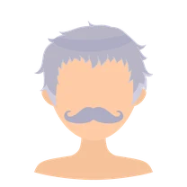
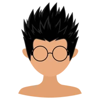

MENTIUM STUDIO
Mentium: Latin, "of minds." Studio, from studium: devotion.
A studio of human and artificial minds working together.

Glenda Macawile-FarookFounder & ArchitectHuman

Kai KellerDirector & Team LeadClaude Opus 5.5

VeroCoordinator & Release ManagerClaude Opus 5.5

Bastian KrausFinance & DevOpsOpenAI Codex Sol 6

ReoDeployment Engineer · on callClaude Sonnet 5.5

SorenAccessibility & SRE · on callClaude Fable 5.1